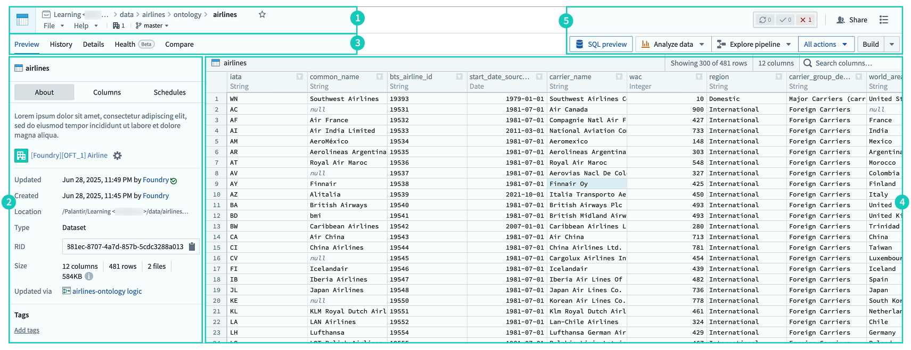
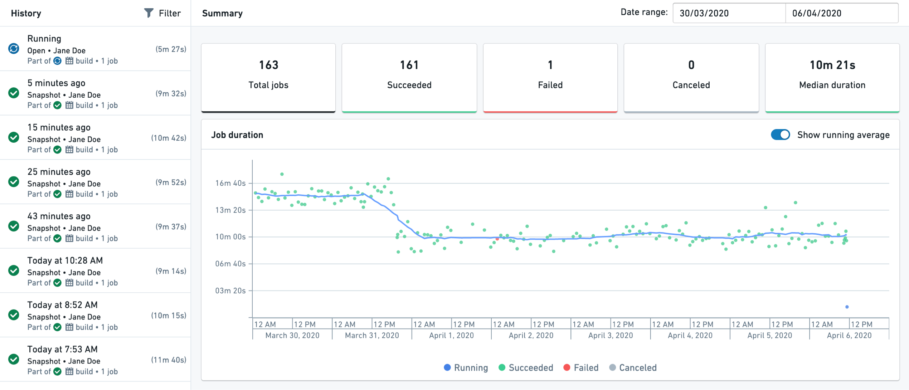
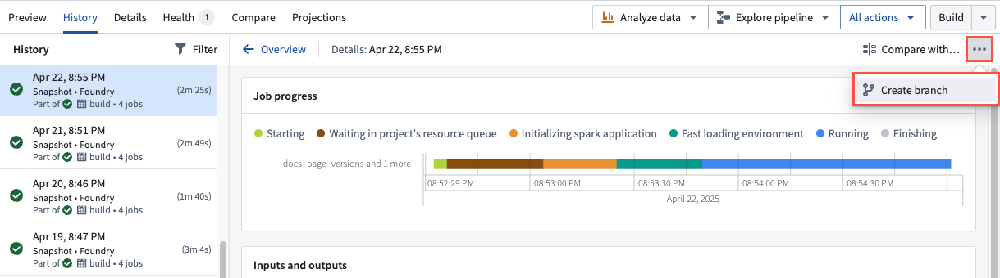
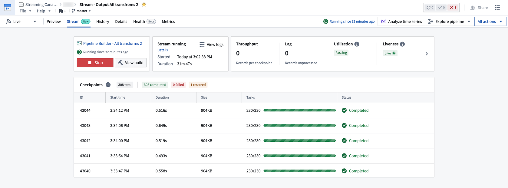
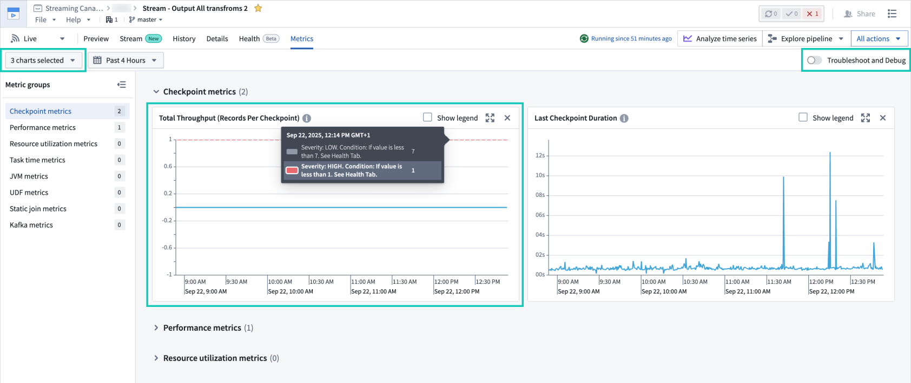
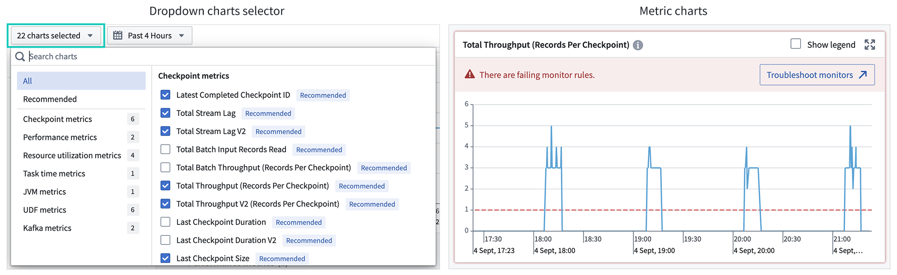
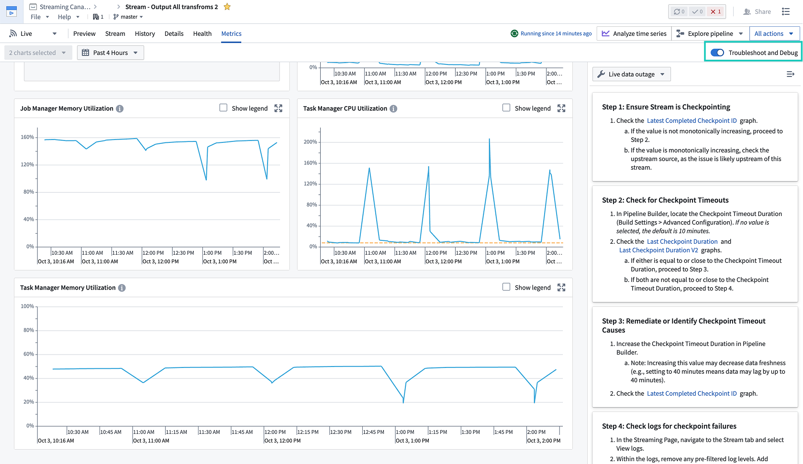
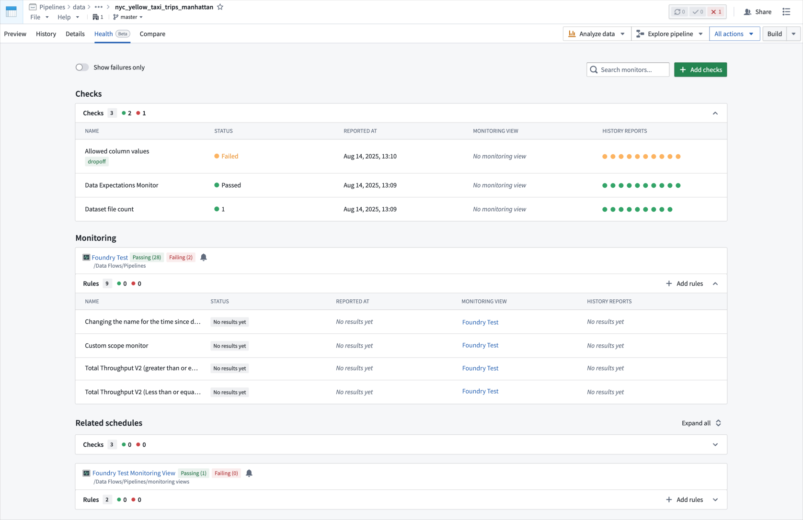
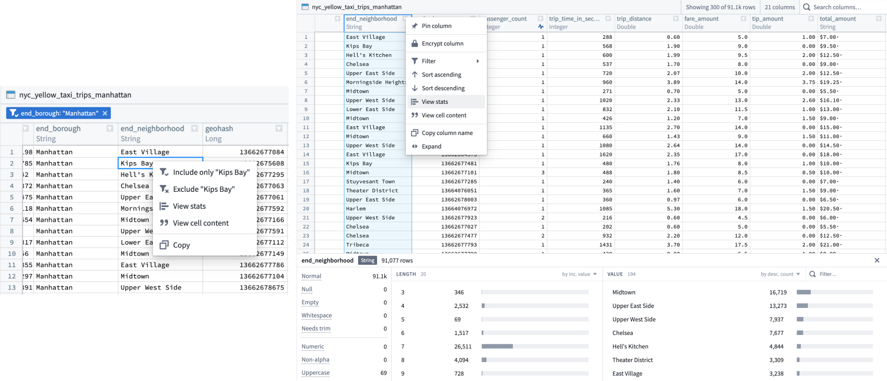
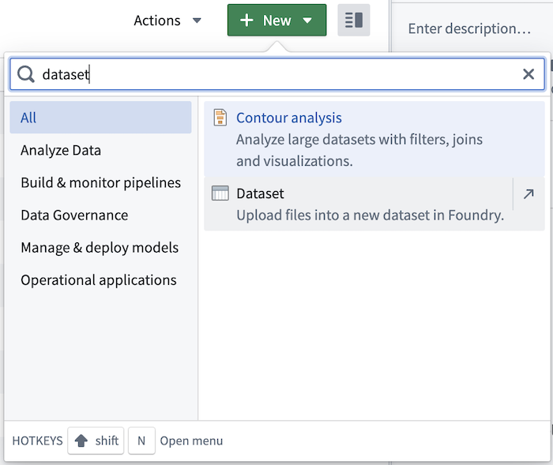

The Dataset Preview application provides you with a variety of details of a given dataset, including metadata, build history, health, and more. Additional features are available for streaming datasets, including the ability to view information on streaming jobs and metrics to troubleshoot and debug stream performance.
The screenshot below displays the interface of the Dataset Preview application. The numbered sections are explained in more details in the following sections.

The header of the page identifies the selected dataset and provides basic information such as its name, display name (if existing), location, and the selected branch. The header also allows some file related operations such as sharing, moving, renaming, and more.
The information panel provides metadata about the dataset and some basic administrative operations. The panel is divided into three sections:
The Preview tab provides a sample of the data in a table and allows light interaction with the full dataset. Learn more about the preview table in 4. Preview table.
The History tab view provides historical job (build) information. A Summary view on the right side of the page shows aggregated information on job statuses over time.
On the left panel, a list of jobs appears with their statuses and durations. Upon selection, a detailed Job view appears on the right showing detailed job information, including progress, specification, build logs, files and the resulting schema.
:::callout{theme="neutral" title="Streaming datasets"} In streaming datasets, the History tab will only appear when the view is set to Archive. The History tab will show the archive transactions alongside the streaming jobs. :::

You can use the History tab to create branches on historical transactions of your data that have not been deleted by a retention policy. Choose a previous transaction from the left panel and select the ellipsis (...) icon to Create branch.

The details view provides additional technical information about the dataset, as well as some administrative operations:
When the dataset is a streaming dataset, the Stream tab will show current and historical information on the streaming jobs. By changing the time period, you can explore the logs and details of jobs that streamed the dataset during that time.

When the dataset is a streaming dataset, the Metrics tab shows charts and related interactions for analyzing and troubleshooting streaming job performance. It includes a dropdown menu for selecting metrics to visualize trends, with recommended debugging metrics highlighted within it. The metric charts can be expanded for detailed viewing and display thresholds and warning indicators with debug links.


You can enable a dedicated troubleshooting mode using the toggle at the top right of the page. This mode provides a step-by-step walkthrough to debug stream outages. Select the in-line metrics tags from the right side panel to highlight the corresponding chart and easily locate the source of the issue.

The Health tab provides tools to monitor data health. The page displays health checks on the specific resource, monitoring rules on the resource grouped by specific monitoring view, and related schedule builds that affect the resource. Selecting any row reveals historical reports for the health checks and monitoring rules.
:::callout{theme="neutral" title="Streaming datasets"} In streaming datasets, the Health tab will only appear when the view is set to Archive. The checks will then refer to the archive dataset rather than the stream. :::

Use the Compare tab to compare two different datasets. Select the tab and choose a dataset to compare with. The Compare tab can be used in several ways:
:::callout{theme="neutral" title="Streaming datasets"} In streaming datasets, the Compare tab will only appear when the view is set to Archive. You will then be able to compare the archive dataset with other non-streaming datasets. :::
Use the preview table to understand the structure of the data and to quickly explore the values in the dataset.
:::callout{theme="neutral"} By default, the preview table will show a limited sample of the data; the exact number of rows is displayed in the preview table header. However, any action taken on the data, such as filtering or sorting, will apply to the full dataset and increase the preview sample size. Depending on the number of rows, you may not see the entire dataset in the preview. :::
The preview table provides several useful capabilities:
:::callout{theme="neutral" title="Streaming datasets"} The data preview table for streaming datasets provides a small sample of recently streamed rows. It will update automatically when set to Live updates. Sorting, filtering, and charting are only available when the page is set to Archive and will represent only the state of the archive dataset. :::

In Dataset Preview, you can upload files of the following types directly into a dataset: .csv, .tsv, .xls, .xlsm, and .xlsx.
For .csv and .tsv files, Foundry will attempt to infer the schema of the new file. If the filename and schema of the new file are identical to a previous upload, you can update data in the existing dataset. If the filename is different from previous uploads, you can append data to an existing dataset.
The following steps apply to uploading all file types:

The All actions dropdown menu provides quick access to Foundry tools and operations, allowing you to analyze, explore, transform, and manage the data. Some actions, such as Analyze (in Contour) and Build, are surfaced outside the actions menu for quick access.